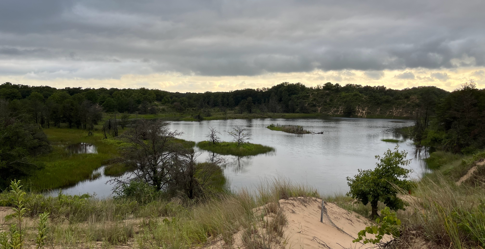

Blumberg, "The Burnside Category" notes (Blum),
Hill--Hopkins--Ravenel, On the non-existence of elements of Kervaire invariant one / Equivariant stable homotopy theory and the Kervaire invariant problem (HHR / HHRb),
among other references for each week.
Meeting information: Tuesday, 9:45-10:50am. Altgeld 141 (backup: Noyes 164).
Schedule of speakers
Week 0 (1/23). Yigal Kamel: Organization and overview.
Week 1 (1/30). Meng Guo: Equivariant homotopy theory of spaces.
Week 2 (2/6). Jiantong Liu: Equivariant cohomology. (notes)
Week 3 (2/13). Garrett Credi: G-spectra I. (notes)
Week 4 (2/20). Yigal Kamel: G-spectra II. (notes)
Week 5 (3/5). Gabrielle Li: Equivariant algebra for G-spectra. (notes)
Week 6 (3/19). Garrett Credi: Spectral sequences.
Week 7 (3/26). Doron Grossman-Naples: Multiplicative structures. (notes)
Week 8 (4/2). Langwen Hui: Examples of G-spectra.
Week 9 (4/9). Kiran Luecke: Real oriented homotopy theory.
Week 10 (4/16). Sam Hsu: Global homotopy theory.